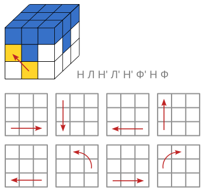
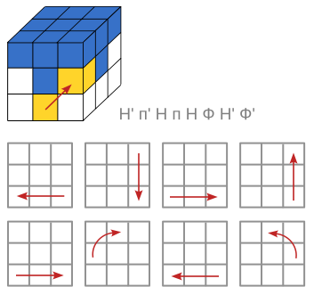
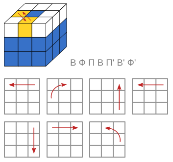
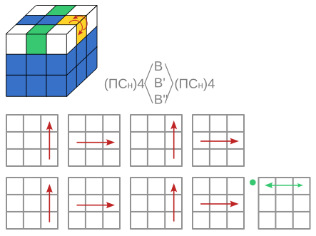
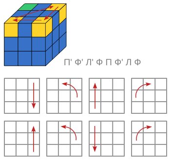
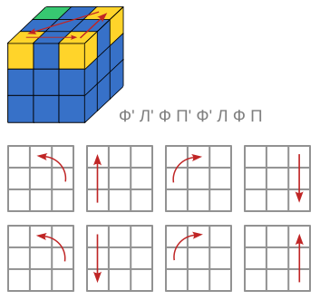
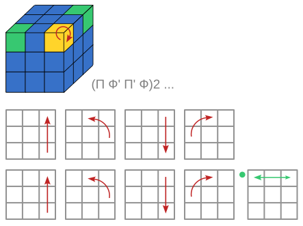
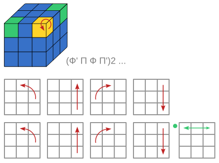

Эта операция в несколько этапов, последовательно устанавливает все светло-зелёные неверно стоящие кубики креста. Куб соберется только после переворота последнего кубика.
В процессе разворота кубиков необходимо не разворачивая куб подставлять неверно стоящие кубики на обозначенное жёлтым цветом место.



Эта операция в несколько этапов, последовательно устанавливает все светло-зелёные, неверно стоящие уголки куба. Кубик соберется только после переворота последнего уголка.
В процессе разворота кубиков необходимо не разворачивая куб подставлять неверно стоящие кубики на место, обозначенное жёлтым цветом.


r/nextfuckinglevel
Четыре самых простых способа собрать кубик Рубика. Сохраняем и используем!так не работает, есть не вращающиеся части